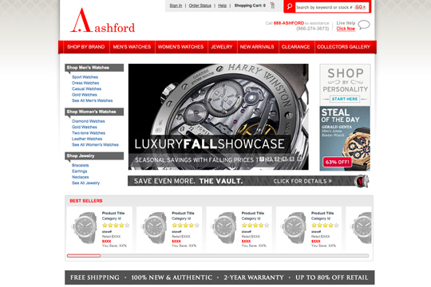
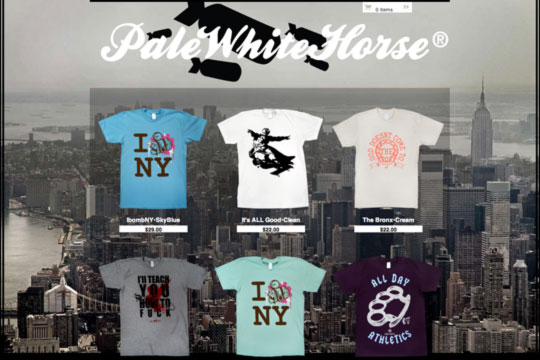
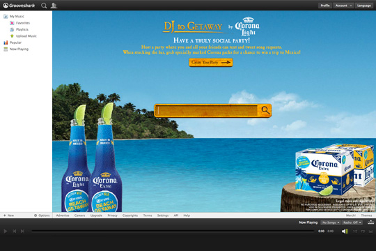
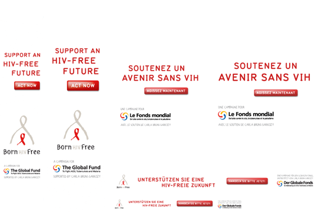
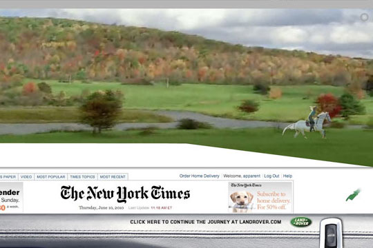
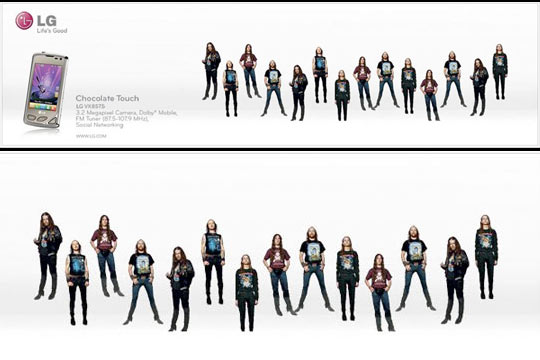

Hello,
My name is Jason, I'm a front end developer based in Brooklyn, New York.
A few of my favorite things are HTML, CSS, and Javascript when I'm not busy learning Ruby on Rails.
The focus of my practice is developing for e-commerce and web applications. I also have lots of experience developing Flash banners and micro-sites as well.
I wish to work as a front end developer in either a leading or supporting position.
Skill Set: HTML, CSS, JQUERY, FLASH, ADOBE SUITE, GITHUB.
Selected Works
-

Project Type:
E-commerce, Freelance Project
Client: Ashford.com
Role:
Front End Development. I was hired on to re-skin ashford.com based on existing designs. My new HTML template uses a combination of different jQuery UI widgets and streamlines browser load time. Also, I set up customized storefronts on Amazon and Buy.com.
Tech:
Javascript, Jquery, Html, Css, Site Optimization
LAUNCH EXAMPLE
-

Project Type:
E-commerce, Freelance Project
Client: Pale White Horse
Role:
Front End Development. I re-skinned a Big Cartel e-commerce site for a NYC based collective of graffiti artists. I was given an approved design by the client to work from. This was a short term freelance project.
Tech:
Html, Css, Site Optimization
LAUNCH EXAMPLE
-

Project Type:
Client Concept Pitch, Freelance Project
Client: Grooveshark
Role:
Flash Developer. Working remotely for Grooveshark, a music sharing service based in Gainesville, Florida, I crafted a deluxe Flash based template to use as an advertising theme. The template scales intelligently to any browser size.
Tech:
Flash IDE, AS3.
LAUNCH EXAMPLE
-
Project Type:
Advertising Banners, Freelance Project
Client: American Living
Role:
Working as a Flash Developer and Designer, I collaborated with a team at Exit Creative to create a campaign of rich media holiday banners for a new brand called American Living by Ralph Lauren.
Tech:
Flash, Actionscript 2 and 3, Flash Video
Click to view examples:
-

Project Type:
Advertising Banners, Freelance Project
Client: The Global Fund
Role:
Flash Developer. While freelancing at YnR I developed six banners in five different languages from existing art direction for the Global Fund, a humanitarian relief and disease awareness foundation.
Tech:
Flash, Actionscript 3
Click to view examples:
-

Project Type:
Client Concept Pitch, Freelance Project
Client: Young and Rubicam
Role:
Flash Developer. While freelancing at YnR, I collaborated with a cool art director/copywriter duo in producing this living sketch for their concept.
Tech:
Flash IDE, AS3, Flash Video.
LAUNCH EXAMPLE
-

Project Type:
Client Concept Pitch, Freelance Project
Client: Young and Rubicam
Role:
Flash Developer. While freelancing at YnR, I collaborated with a cool art director/copywriter duo in producing this living sketch for their concept.
Tech:
Flash IDE, AS3.
LAUNCH EXAMPLE
Resume Overview
INTENT Where I want to be is at a cool company that is making some kind of difference in their product or service. Since 2005, I’ve been working for myself as a freelance developer and sometimes designer for many name brand clients producing banners or sites. I’m largely a self-taught programmer who thrives on curiosity and doing, capitalizing on my abilities. There’s never enough time to tackle all my ideas and for that I’m in search for collaborative place to work - surrounded by like-minded folks to support and grow with. I’m open for long term freelance or full time work. To get a closer look at my experience please download my resume.
Contact
CELL: 603 376 7635
EMAIL: scientific(.)feelings(at)gmail
TIME LINE OF PAST PROJECTS
Ashford.com
Freelance Front End Developer
Ashford.com site re-design.
NYC 08.11 - 10.11
Grooveshark.com
Freelance Flash Developer
Corona theme for "Dj to Getaway" contest.
NYC 04.11 - On going Freelance basis.
Pale White Horse
Freelance Web Developer
Customized Bigcartel e-commerce site from existing design template.
NYC 03.11 - Short term Freelance project.
Exit Creative Company
Freelance Flash Developer
Rich media holiday banners for American Living by Ralph Lauren.
NYC 11.10 - 1.11 - Short term Freelance project.
Y&R
Freelance Flash Developer
Various internal projects concerning - The Global Fund, Land Rover, LG, Rubbermaid, Pepsi, Colgate.
NYC 12.09 - 10.10 - Perma-lance.
Urban Rustic
Art Director & Flash Developer
In-store menu boards, catering menu, and urbanrusticnyc.com design / development.
NYC 1.08 - On going Freelance basis.
ROGAN LLC
Art Director & Flash Developer
Web designer and developer for various sites: rogannyc.com, loomstate.org, roganobjects.com
NYC 4.05 - 3.08 - Perma-lance.